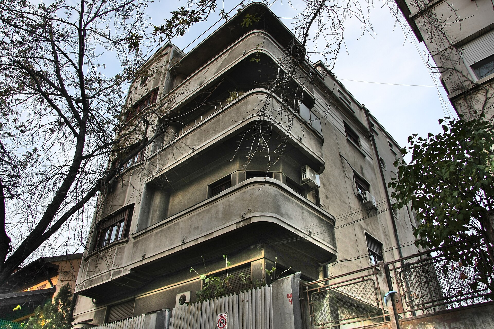

Capitolul unu
1907-1928
București
Un elev precoce la București
Mircea Eliade s-a născut la București, la 9 martie 1907. Cititor vorace, cu o înclinație pentru munca de laborator, a început să publice devreme: la paisprezece ani a vândut unei reviste populare o povestire despre piatra filosofală, iar de-a lungul adolescenței a scris atât despre științele naturii, cât și proză.
În 1925 s-a înscris la Universitatea din București pentru a studia filosofia. Prima sa carte, un studiu despre gândirea Renașterii italiene, de la Marsilio Ficino la Giordano Bruno, a crescut din lucrarea sa de licență și a apărut în 1928, anul în care a absolvit.
